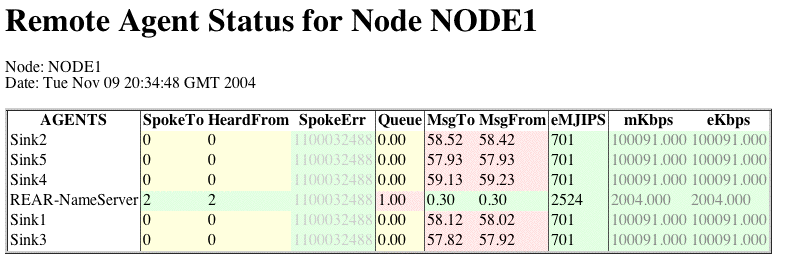

Remote Agent Status Servlet
|

|
- Spoke To
- number of seconds since this node has spoke to this agent.
- Heard From
- number of seconds since something has heard from this
agent (includes other node via gossip)
- Spoke Error
- number of seconds since the last communication error
- Queue
- instantaneous queue length for messages waiting to be sent to
agent. (Includes messages in the process of being sent)
- MsgTo
- message per second from all agents on this node to agent
- MsgFrom
- messages per second from agent to any agent on this node
- eMJIP
- effective Million Java Instruction Per Second that a single
thread on the agent host.
- mKbps
- maximum kilobits per second for the network path between
this node and the agent
- eKbps
- expected kilobits per second for the network path between
this node and the agent